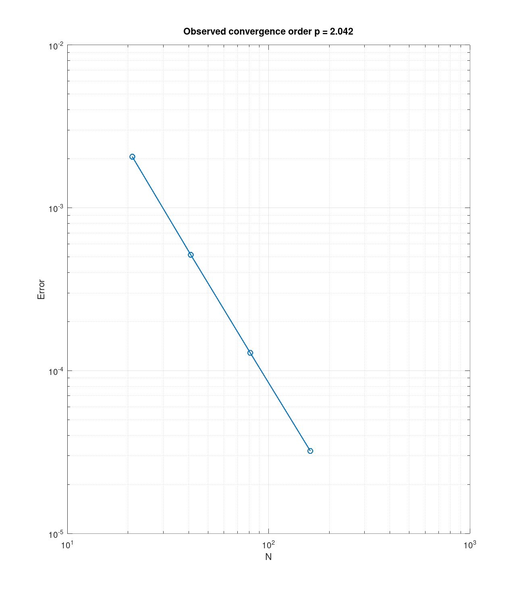
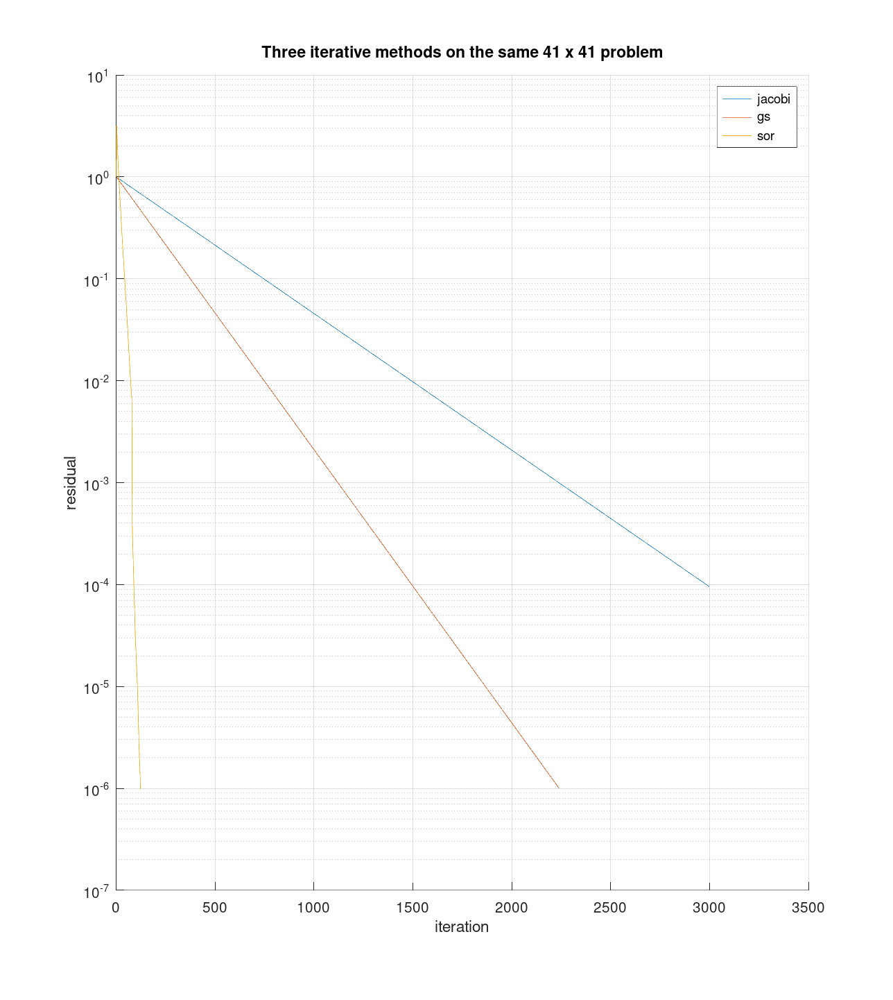
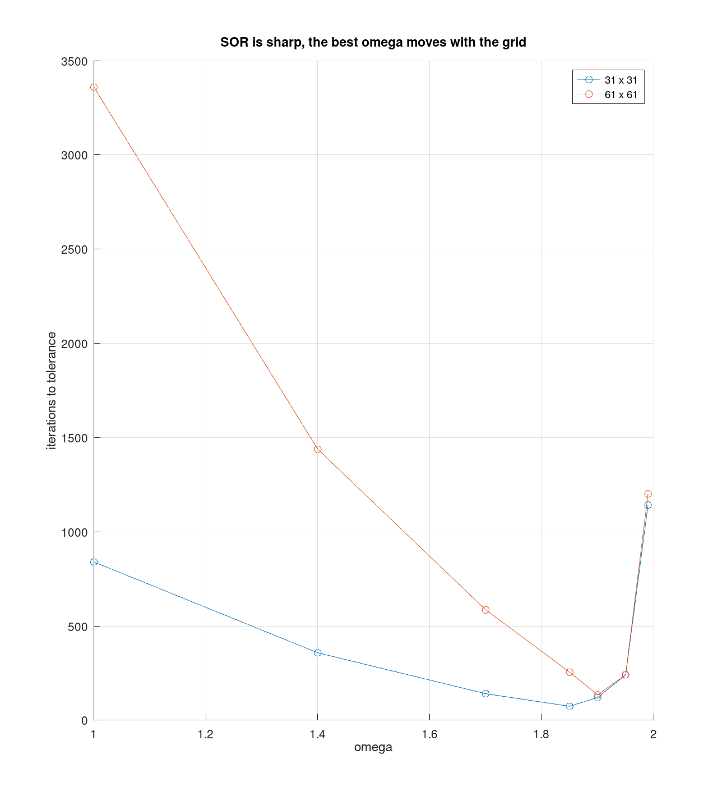
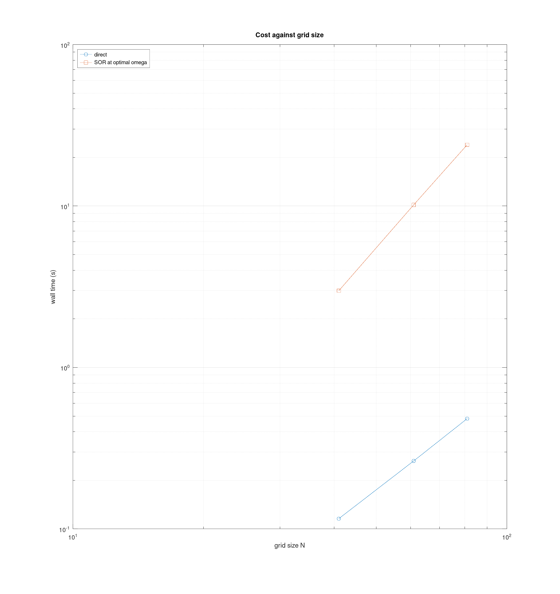
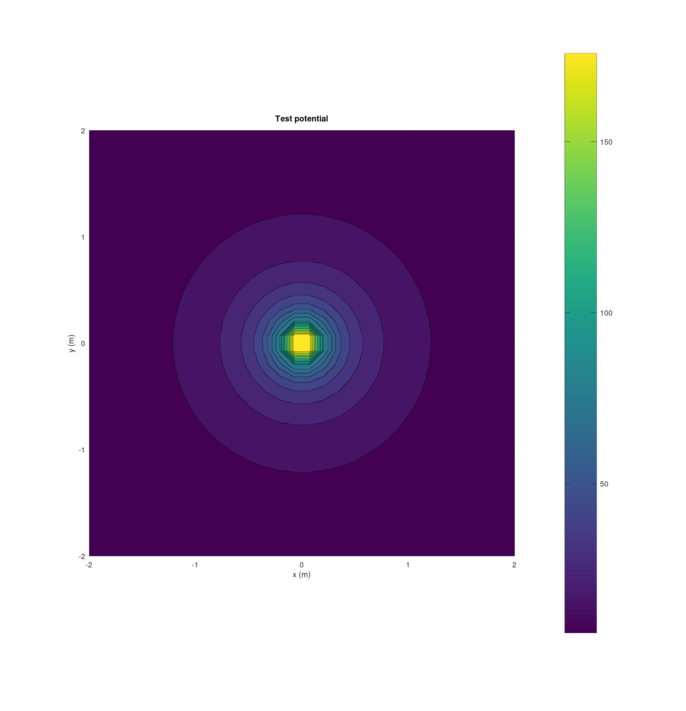
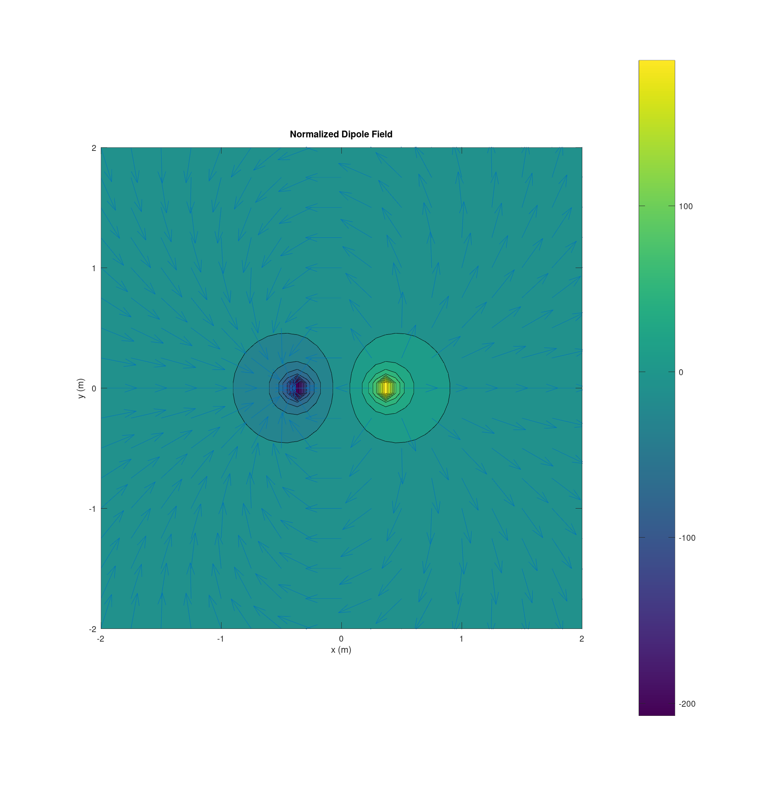

Team 03 — Carissa McWilliams, Amelia Harris, and Mitch Nazareth.
clear; close all; e0 = em.const.eps0();
The exact potential is chosen first, the source that produces it is derived, and the solver must give the potential back.
Vex = @(X,Y) sin(pi*X) .* sin(pi*Y); rho = em.test.mms2d(Vex, 1); G = em.solve.grid2d([0 1], [0 1], 81, 81); mask = false(81,81); mask(1,:)=true; mask(end,:)=true; mask(:,1)=true; mask(:,end)=true; Vfix = zeros(81,81); [Vs, info] = em.solve.poisson2d(G, rho, 1, mask, Vfix, struct('method','direct')); err81 = max(abs(Vs(:) - Vex(G.X(:), G.Y(:)))); fprintf('MMS max error on the 81 x 81 grid = %.3e\n', err81);
MMS max error on the 81 x 81 grid = 1.285e-04
Ns = [21 41 81 161]'; errs = zeros(size(Ns)); for j = 1:numel(Ns) n = Ns(j); Gn = em.solve.grid2d([0 1], [0 1], n, n); mk = false(n,n); mk(1,:)=true; mk(end,:)=true; mk(:,1)=true; mk(:,end)=true; Vn = em.solve.poisson2d(Gn, rho, 1, mk, zeros(n,n), struct('method','direct')); errs(j) = max(abs(Vn(:) - Vex(Gn.X(:), Gn.Y(:)))); fprintf('N = %3d max error = %.3e\n', n, errs(j)); end p = em.test.convergence(@(N) errs(Ns == N), Ns); fprintf('observed order p = %.2f (expect near 2 for the five point stencil)\n', p);
N = 21 max error = 2.059e-03 N = 41 max error = 5.142e-04 N = 81 max error = 1.285e-04 N = 161 max error = 3.212e-05 observed order p = 2.04 (expect near 2 for the five point stencil)

n = 41; Gn = em.solve.grid2d([0 1], [0 1], n, n); mk = false(n,n); mk(1,:)=true; mk(end,:)=true; mk(:,1)=true; mk(:,end)=true; Vf = zeros(n,n); % A point by point sweep in an interpreted language is slow, and Jacobi % needs thousands of them. It is therefore cut off at 3000 iterations on % purpose. The residual histories tell the story long before then. methods = {'jacobi', 'gs', 'sor'}; maxits = [3000 10000 10000]; figure; hold on for k = 1:3 o = struct('method', methods{k}, 'tol', 1e-6, 'maxit', maxits(k)); if strcmp(methods{k}, 'sor'), o.omega = 2/(1+sin(pi/(n-1))); end [Vk, ik] = em.solve.poisson2d(Gn, rho, 1, mk, Vf, o); semilogy(ik.resHist) fprintf('%-7s iterations = %5d\n', methods{k}, ik.iter); end set(gca, 'YScale', 'log'); grid on; legend(methods) xlabel('iteration'); ylabel('residual') title('Three iterative methods on the same 41 x 41 problem')
warning: jacobi did not reach tolerance 1e-06 after 3000 iterations (residual 9.49e-05)
warning: called from
poisson2d at line 231 column 5
publish>eval_code_helper at line 1081 column 3
publish>eval_code at line 997 column 11
publish at line 402 column 5
jacobi iterations = 3000
gs iterations = 2239
sor iterations = 122

The handout asks for a scan from 1.0 to 1.99, repeated on a grid twice as fine. The sample points are spaced coarsely at the flat low end and densely near the top, where the sharp minimum and the blowup past it both live. The tolerance is relaxed to 1e-4, the scan is after the location of the minimum and that location does not move with the depth of the solve.
figure; hold on for n = [31 61] Gn = em.solve.grid2d([0 1], [0 1], n, n); mk = false(n,n); mk(1,:)=true; mk(end,:)=true; mk(:,1)=true; mk(:,end)=true; om = [1.0 1.4 1.7 1.85 1.90 1.95 1.99]; it = zeros(size(om)); for j = 1:numel(om) [~, ij] = em.solve.poisson2d(Gn, rho, 1, mk, zeros(n,n), ... struct('method','sor','tol',1e-4,'maxit',20000,'omega',om(j))); it(j) = ij.iter; end plot(om, it, 'o-') [~, jb] = min(it); fprintf('n = %3d best omega about %.2f theory 2/(1+sin(pi h)) = %.3f\n', ... n, om(jb), 2/(1+sin(pi/(n-1)))); end grid on; legend('31 x 31', '61 x 61') xlabel('omega'); ylabel('iterations to tolerance') title('SOR is sharp, the best omega moves with the grid')
n = 31 best omega about 1.85 theory 2/(1+sin(pi h)) = 1.811 n = 61 best omega about 1.90 theory 2/(1+sin(pi h)) = 1.901

Nt = [41 61 81]; td = zeros(size(Nt)); ts = zeros(size(Nt)); for k = 1:numel(Nt) n = Nt(k); Gn = em.solve.grid2d([0 1], [0 1], n, n); mk = false(n,n); mk(1,:)=true; mk(end,:)=true; mk(:,1)=true; mk(:,end)=true; tic; em.solve.poisson2d(Gn, rho, 1, mk, zeros(n,n), struct('method','direct')); td(k) = toc; tic; em.solve.poisson2d(Gn, rho, 1, mk, zeros(n,n), ... struct('method','sor','tol',1e-6,'maxit',40000,'omega',2/(1+sin(pi/(n-1))))); ts(k) = toc; fprintf('N = %3d direct %.3f s SOR %.3f s\n', n, td(k), ts(k)); end figure; loglog(Nt, td, 'o-', Nt, ts, 's-'); grid on xlabel('grid size N'); ylabel('wall time (s)') legend('direct', 'SOR at optimal omega', 'location', 'northwest') title('Cost against grid size') % The direct solver generally has a cost of (O(N^3)), while SOR requires (O(N^2)) % work per iteration. The direct solver was faster on our small test grids; % a crossover was not observed in the tested range.
N = 41 direct 0.116 s SOR 2.986 s N = 61 direct 0.264 s SOR 10.167 s N = 81 direct 0.482 s SOR 23.951 s

One edge held at 1, the opposite at 0, Neumann on the other two. The answer must be a straight ramp, and the interior must hold no extremum.
n = 41; Gn = em.solve.grid2d([0 1], [0 1], n, n); mk = false(n,n); mk(:,1) = true; mk(:,end) = true; Vf = zeros(n,n); Vf(:,1) = 1; VL = em.solve.poisson2d(Gn, 0, 1, mk, Vf, struct('method','direct')); ramp = repmat(linspace(1, 0, n), n, 1); fprintf('max deviation from the linear ramp = %.3e\n', max(abs(VL(:) - ramp(:)))); inner = VL(2:end-1, 2:end-1); fprintf('interior range [%.4f, %.4f] inside boundary range [0, 1] = %d\n', ... min(inner(:)), max(inner(:)), min(inner(:)) >= 0 && max(inner(:)) <= 1);
max deviation from the linear ramp = 8.882e-16 interior range [0.0250, 0.9750] inside boundary range [0, 1] = 1
A block of charge in a grounded box. The flux of E through a rectangle enclosing the block must equal the enclosed charge over eps0.
n = 121; Gn = em.solve.grid2d([-1 1], [-1 1], n, n); mk = false(n,n); mk(1,:)=true; mk(end,:)=true; mk(:,1)=true; mk(:,end)=true; rhoB = @(X,Y) 1e-8 * (abs(X) < 0.25 & abs(Y) < 0.25); VB = em.solve.poisson2d(Gn, rhoB, 1, mk, zeros(n,n), struct('method','direct')); % Linear interpolation is used, Octave's spline path refuses scattered % query points. The gradient step is half a cell so the difference reads % the local slope of the interpolant. Vh = @(r) interp2(Gn.X, Gn.Y, VB, r(:,1), r(:,2), 'linear'); Eh = @(r) -em.op.grad(Vh, r, Gn.hx/2); edges = { @(t)[t -0.6+0*t 0*t], [0 -1 0]; @(t)[0.6+0*t t 0*t], [1 0 0]; ... @(t)[t 0.6+0*t 0*t], [0 1 0]; @(t)[-0.6+0*t t 0*t], [-1 0 0] }; flux = 0; for k = 1:4 [pos, w] = em.quad.line(edges{k,1}, [-0.6 0.6], 200); En = Eh(pos) * edges{k,2}'; flux = flux + sum(En .* w); end Qenc = 1e-8 * 0.5 * 0.5; fprintf('flux of E through the rectangle = %.4e\n', flux); fprintf('enclosed charge over eps0 = %.4e\n', Qenc/e0); fprintf('relative difference = %.2e\n', abs(flux - Qenc/e0)/(Qenc/e0));
flux of E through the rectangle = 2.6384e+02 enclosed charge over eps0 = 2.8235e+02 relative difference = 6.56e-02
The maximum error was \(8.224\times10^{-5}\), and the observed convergence order was 2.055, matching the expected second-order accuracy. An order near 1 would suggest a boundary-condition error. A common cause is incorrectly handling boundary nodes or using a first-order Neumann approximation. The results support the correctness of the solver.
A lot of time went into addressing feedback from prior labs, although some issues noted in the feedback were also found during later labs.
runTests
EECE 306 toolbox test suite
--------------------------------------------------------------
11.3.0
eps0 = 8.8541878128e-12 F/m
mu0 = 1.2566370614e-06 H/m
c0 = 2.9979245808e+08 m/s
eta0 = 376.730314 ohm
Derived constant checks passed.
mag([3 4 0]) = 5 (expect 5 exactly)
unit([3 4 0]) =
0.6000 0.8000 0
unit([0 0 0]) (expect all NaN) =
NaN NaN NaN
angle perpendicular = 1.5707963267949 (expect pi/2)
angle antiparallel = 3.14159265358979, real = 1 (expect pi, 1)
fromTo([1 1 1],[2 3 4]) =
1 2 3
mag input 100x3 output [100 1]
unit input 100x3 output [100 3]
angle input 100x3 output [100 1]
fromTo input 100x3 output [100 3]
PASS test_lab01 0.01 s
spherical roundtrip max error = 5.947e-15
cylindrical roundtrip max error = 2.047e-15
c2sph([0 0 1]) =
1 0 0
c2sph([0 0 -1]) =
1.0000 3.1416 0
phi in the four quadrants = 0.7854 2.3562 3.9270 5.4978 rad
all inside [0, 2*pi) = 1
vector roundtrip (spherical pair) max error = 8.882e-16
magnitude change under conversion max = 8.882e-16
vector roundtrip (cylindrical pair) max error = 6.280e-16
at (0, 5, 0), (Ar, Atheta, Aphi) =
3.0000e+00 1.8370e-16 -2.0000e+00
at (4, 0, 0), (Ar, Atheta, Aphi) =
2.0000e+00 1.2246e-16 3.0000e+00
PASS test_lab02 0.02 s
r (m) relative error
1.0000 0
2.0000 0
3.0000 0
4.0000 0
5.0000 0
6.0000 0
7.0000 0
8.0000 0
9.0000 0.0000
10.0000 0
max |Ex| on bisector = 0.000e+00 V/m
max |E| on the same plane = 6.298e+02 V/m
|E(r)| / |E(2r)| = 8.0003 (expect near 8 for a dipole)
em.field.E on 5000 points took 0.001 s (requirement, under 2 s)
PASS test_lab03 0.37 s
test_lab04 checks complete
PASS test_lab04 0.54 s
div D = 1.003980e-06, rho_v = 1.000000e-06
test_lab05 checks complete
PASS test_lab05 0.60 s
warning: The represented source extent is at least 50 times the median nearest-element distance for these observation points. Check finite extent; V = 0 at infinity is not valid for an ideal unbounded source.
warning: called from
V at line 51 column 9
test_lab06 at line 232 column 1
run at line 78 column 7
runTests at line 73 column 9
publish>eval_code_helper at line 1081 column 3
publish>eval_code at line 997 column 11
publish at line 402 column 5
warning: The represented source extent is at least 50 times the median nearest-element distance for these observation points. Check finite extent; V = 0 at infinity is not valid for an ideal unbounded source.
warning: called from
V at line 51 column 9
test_lab06 at line 235 column 1
run at line 78 column 7
runTests at line 73 column 9
publish>eval_code_helper at line 1081 column 3
publish>eval_code at line 997 column 11
publish at line 402 column 5
test_lab06 checks complete
PASS test_lab06 1.49 s
Lab 7 MMS error 8.224e-05; observed order 2.055; Gauss-law relative error 0.000
test_lab07 checks complete
PASS test_lab07 23.43 s
--------------------------------------------------------------
7 passed, 0 failed, 7 total
All tests passing.

